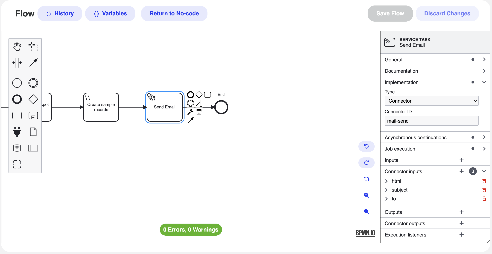

<article class="docs-article" id="section-1">
    <section class="docs-section" id="version">
        <div>
            <h1>BPMN Email Connector</h1>
            <hr><br>
            
            <h3>Send an Email from a Flow</h3>
            <br>
            <p>The following steps explain how to configure and use the email connector (via <code>mail-send</code>) in a BPMN flow.</p>
            
            <ol>
                <li>
                    <h4>Flow</h4>
                    <p>Launch your BPMN Modeler and open the flow where you want to send an email. Insert or select a <strong>Service Task</strong> in the workflow where the email should be sent.</p>
                </li>
                
                <li>
                    <h4>Set the Service Task to Use a Connector</h4>
                    <p>Select the Service Task and open the Properties/Details panel. Under <strong>Implementation</strong>:</p>
                    <ul>
                        <li>Choose <strong>Type</strong> as <code>Connector</code>.</li>
                        <li>Set the <strong>Connector ID</strong> to <code>mail-send</code> (or your engine-specific ID).</li>
                    </ul>
                    <p><em>Reference Screenshot:</em> <br>
                        
                    </p>
                </li>
                
                <li>
                    <h4>Configure Connector Inputs</h4>
                    <p>Under <strong>Connector inputs</strong>, define parameters for the email connector. Common inputs include <strong>to</strong>, <strong>subject</strong>, and <strong>html</strong> or <strong>text</strong>. 
                       You can also configure additional parameters like <strong>cc</strong>, <strong>bcc</strong>, <strong>attachments</strong>, and so on.
                    </p>
                </li>
                
                <li>
                    <h4>Save and Deploy</h4>
                    <p>When all required inputs are set, ensure your BPMN model shows <strong>0 Errors, 0 Warnings</strong>. Save and deploy the process to your BPM engine.</p>
                </li>
                
                <li>
                    <h4>Test the Flow</h4>
                    <p>Run the process. When the flow reaches the <strong>Send Email</strong> Service Task, the engine will invoke the <code>mail-send</code> connector with your specified parameters. Verify the recipient’s inbox to confirm success.</p>
                </li>
            </ol>
            
            <hr>
            <br>
            <h2>Configuring the Email Connector Parameters</h2>
            <p>
                Each parameter below can be specified as a hard-coded string value or via an expression 
                referencing a process variable (e.g., <code>${variableName}</code>).
            </p>

            <table>
                <thead>
                    <tr>
                        <th>Input Parameter</th>
                        <th>Type</th>
                        <th>Required?</th>
                        <th>Description</th>
                    </tr>
                </thead>
                <tbody>
                    <tr>
                        <td><code>from</code></td>
                        <td>String</td>
                        <td>No</td>
                        <td>Sender’s email address. Typically read from configuration if not provided.</td>
                    </tr>
                    <tr>
                        <td><code>fromAlias</code></td>
                        <td>String</td>
                        <td>No</td>
                        <td>Display name for the <code>from</code> address. Also typically read from configuration if omitted.</td>
                    </tr>
                    <tr>
                        <td><code>to</code></td>
                        <td>String</td>
                        <td><strong>Yes</strong></td>
                        <td>
                            Primary recipient’s email address. 
                            Can be a static string (<code>"user@example.com"</code>) or an expression (<code>${email}</code>).
                        </td>
                    </tr>
                    <tr>
                        <td><code>cc</code></td>
                        <td>String</td>
                        <td>No</td>
                        <td>Comma-separated list of CC recipients.</td>
                    </tr>
                    <tr>
                        <td><code>bcc</code></td>
                        <td>String</td>
                        <td>No</td>
                        <td>Comma-separated list of BCC recipients.</td>
                    </tr>
                    <tr>
                        <td><code>subject</code></td>
                        <td>String</td>
                        <td><strong>Yes</strong></td>
                        <td>Subject line for the email, e.g. <code>"Order Confirmation"</code> or <code>${email_subject}</code>.</td>
                    </tr>
                    <tr>
                        <td><code>text</code></td>
                        <td>String</td>
                        <td>No</td>
                        <td>Plain-text body of the email. Optional if using <code>html</code>.</td>
                    </tr>
                    <tr>
                        <td><code>html</code></td>
                        <td>String</td>
                        <td>No</td>
                        <td>HTML body of the email. Either <code>text</code> or <code>html</code> (or both) can be used.</td>
                    </tr>
                    <tr>
                        <td><code>fileNames</code></td>
                        <td>List&lt;String&gt;</td>
                        <td>No</td>
                        <td>Paths to files for attachments. Example: <code>["/path/to/file1.pdf"]</code>.</td>
                    </tr>
                    <tr>
                        <td><code>files</code></td>
                        <td>Map&lt;String, File&gt;</td>
                        <td>No</td>
                        <td>Map of filenames &rarr; file objects stored as process variables for attachments.</td>
                    </tr>
                </tbody>
            </table>

            <p>
                <strong>Note:</strong> 
                Make sure your BPM engine’s SMTP settings (host, port, credentials) are configured so the 
                <strong>mail-send</strong> connector can dispatch emails successfully.
            </p>

        </div>
    </section>
</article>